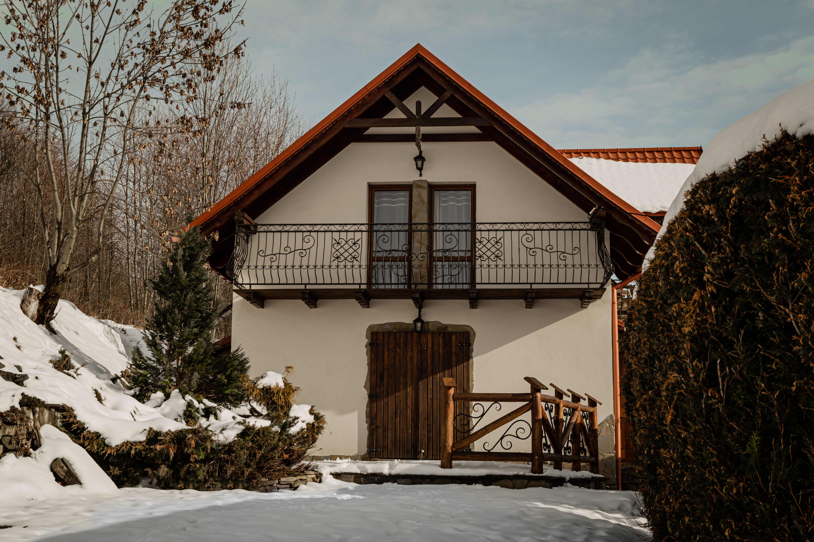

Odetchnij świeżym powietrzem i odpocznij z dala od codzienności
Zaplanuj pobytZapraszamy do całorocznego domku położonego u szczytu Magurki, z malowniczym widokiem na beskidzkie szczyty, w tym Babią Górę.
Domek jest całoroczny i ogrzewany kominkiem z płaszczem wodnym. Na piętrze znajdują się dwie sypialnie z balkonami oraz łazienka z prysznicem. Na parterze mieści się salon z jadalnią, w pełni wyposażona kuchnia (AGD, garnki, talerze, kubki, sztućce) oraz toaleta.
Domek położony jest pod lasem i posiada taras. W sezonie letnim do dyspozycji gości jest grill, leżaki oraz hamak.
W odległości około 9 km znajduje się wyciąg narciarski „u Malika A”. Mosorny Groń oddalony jest o 12 km, gdzie znajdują się wyciągi Baca oraz Wojtek. W pobliżu znajduje się również Babiogórski Park Narodowy oraz klasztor Karmelitów.
Magurka i Przysłop to malowniczy przysiółek beskidzki położony na wysokości ok. 700 m n.p.m. w Paśmie Jałowieckim Beskidu Żywieckiego, na terenie gmin Zawoja, Stryszawa oraz Maków Podhalański.

Mosorny Groń, Baca i Wojtek – idealne warunki zimą dla początkujących i zaawansowanych.
Najwyższy szczyt Beskidu Żywieckiego – wejście m.in. z Przełęczy Krowiarki.
Rezerwaty, szlaki górskie i unikalna przyroda UNESCO.
Muzeum Zabawki Drewnianej i lokalne rękodzieło regionu Beskidów.
Kompleks szlaków pieszych i rowerowych z pięknymi widokami.
Centrum górskie „Korona Ziemi”, tor motocrossowy i liczne trasy.
Karczma Rzym w Suchej Beskidzkiej – klimatyczne miejsce z kuchnią regionalną.
Tydzień Kultury Beskidzkiej – Maków Podhalański i okolice.
Zapytaj o dostępne terminy i ceny – odpowiemy najszybciej jak to możliwe.
Najlepsze terminy szybko znikają. Zapraszamy do Stryszawy!
Rezerwuję